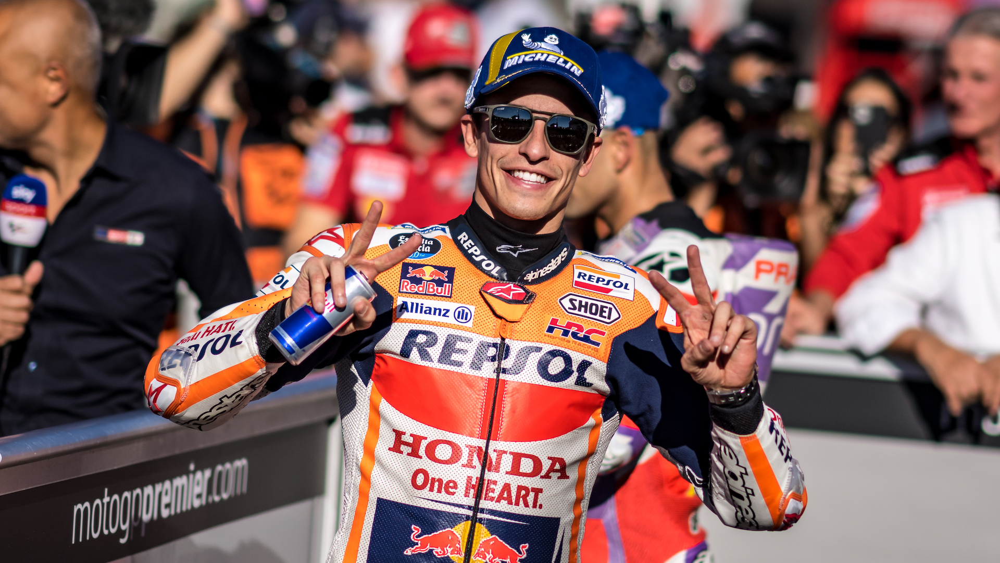
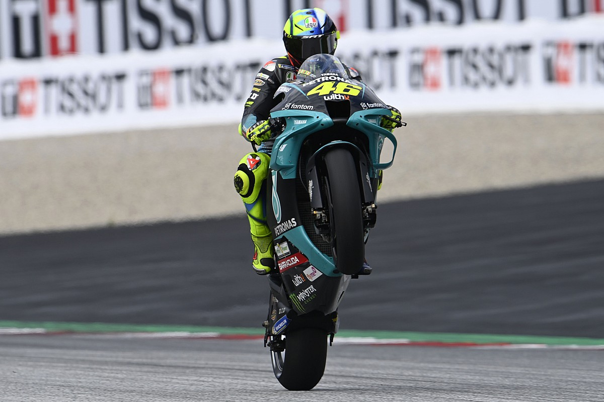

Esta sección esta dedicada a recordar un poco sobre el pasado de de 2 de los meojes pilotos que ha podido apreciar cualquiera que se considere medianamente fan del Moto GP.
El nacimiento de una leyenda
Marc Márquez Alentà (Cervera, Lérida, 17 de febrero de 1993) es un piloto de motociclismo español que compite en MotoGP.
Ha ganado ocho títulos del Campeonato del Mundo de Motociclismo en tres categorías diferentes: 125cc (2010),
Moto2 (2012) y seis veces en MotoGP (2013, 2014, 2016, 2017, 2018 y 2019). Desde 2013 es piloto del equipo Repsol Honda,
donde ha acumulado 50 victorias y 78 podios en 105 carreras disputadas. En febrero de 2020 extendió su contrato con Honda hasta 2024.
En su primera temporada en la categoría, se hizo con el Campeonato del Mundo de Motociclismo,
convirtiéndose en el piloto más joven en ganar un campeonato de la máxima categoría de este deporte (MotoGP),
superando así el récord de Freddie Spencer. Es, además, el piloto más joven de la historia en ser bi, tri, tetra,
penta y hexa campeón de la categoría reina del motociclismo.
La temporada 2020 no comenzó bien para el piloto español, ya que en la primera carrera disputada en el Circuito de Jerez
el 19 de julio sufrió una caída en la que se fracturó el húmero. Esta caída ocasionó que se perdiese la segunda carrera,
la cual también fue en Jerez y la disputada en el Circuito de Brno tras tener que pasar por quirófano por segunda vez.
Finalmente Honda y Marc Márquez hicieron oficial que este volvería a correr en 2021, por lo que Marc se perdió el resto de
las carreras de la temporada 2020. La temporada 2020 duró solo 4 meses debido a los cambios producidos por culpa de la pandemia de COVID-19.

Valentino Rossi (El Doctor)
Valentino Rossi (Urbino, Italia; 16 de febrero de 1979) es un expiloto de motociclismo italiano.
Ha ganado nueve títulos mundiales en cuatro categorías: 125cc (1997), 250cc (1999), 500cc (2001)
y ha sido heptacampeón de la categoría MotoGP (2001 2002, 2003, 2004, 2005, 2008 y 2009).
Ha participado en la máxima categoría, con los tres grandes equipos de motociclismo de su momento:
Honda, Yamaha y Ducati, siendo desde 2013 y hasta 2020 piloto oficial Yamaha. En 2021 vistió los colores del Petronas Yamaha SRT .
Actualmente, es el piloto con más podios (235) en la historia del Mundial de Motociclismo, y además
ha conseguido el mayor número de victorias (89), podios (199) y vueltas rápidas (76) en MotoGP.
Es el único piloto en la historia del motociclismo que ha ganado el título en cuatro clases diferentes:
125cc (1), 250cc (1), 500cc (1) y MotoGP (6), además de ser el único piloto que ha ganado el título de la categoría
reina en cuatro tipos diferentes de motocicletas, debido al cambio de reglamento en los años: Honda de 500 cc de 2 tiempos,
Honda de 990 cc de 4 tiempos, Yamaha de 990 cc de 4 tiempos, Yamaha de 800 cc de 4 tiempos.
Sus padres son Graziano Rossi y Stefania Palma. Tiene un hermano (por parte de madre),
Luca Marini, también corredor de motociclismo, y una hermana, Clara Rossi (por parte de padre).
Desde muy pequeño vivió en Tavullia, donde comenzó su vida en el deporte de motor corriendo en los karts apoyado por su padre Graziano.
Ganó el campeonato regional de 1990. Su padre intentó hacer que Valentino continuara en el mundo de las cuatro ruedas
y trató de posicionarlo en el campeonato europeo de Karts y en el regional de 100 cc para que siguiera la carrera hacia la Fórmula 1.
Los altos costos de seguir este camino lo obligaron a quedarse en las mini motos con las que ganó el campeonato regional en 1992.
Su debut como piloto de motos lo hace en el campeonato italiano Sport production o campeonato SP en el año 1993 en una C
agiva Mito de Claudio Lusuardi con la que sufre una caída en la primera curva de la primera práctica.[cita requerida]
En 1994 participa simultáneamente en el campeonato Sport Production y en el GP Italiano, venciendo el campeonato SP y adquiriendo experiencia
en los prototipos de Grand Prix. Al año siguiente gana el campeonato de Italia en la clase 125 y clasifica tercero en el
campeonato europeo de la misma categoría.[cita requerida] Valentino Rossi disputó su última carrera en el Gran Premio de la Comunidad Valenciana de Motociclismo,
el 14 de noviembre de 2021.
